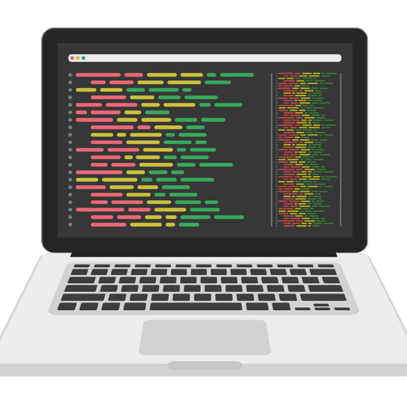

Apellidos: Pinzón Serrano
Correo de contacto: servor1230@gmail.com
Telefono de contacto: +57 315 3327502
Dirección: Carrera 46 #47-21
Ciudad: Girón, Santander


Perfil
Actualmente soy un estudiante de desarrollo de software que se encuentra en su etapa de formación profesional con Campuslands, a su vez, cuento con un bachillerato técnico comercial lo que demuestras mis capacidades emprendedoras, me puedo describir como una persona solida en capacidad analitica, pensamiento crítico, lógico, habilidades de investigación y resolución de problemas, soy una persona que se enfoca en diversas disciplinas e interes, uno de ellos es el desarrllo de software, en definitiva, se podría decir que mi perfil profesional se fundamenta en que soy una persona versatil y adaptable en muchas situaciones y retos que se me interpongan.
Estudios:
-Bachillerato técnico comercial Colegio Sagrado Corazón de Jesús - Zapatoca
-Tecnico en asistencia administrativa SENA
Habilidades:
Python: 59/100
Git y GitHub: 82/100
SCRUM: 92/100
Introducción a la programación:83/100